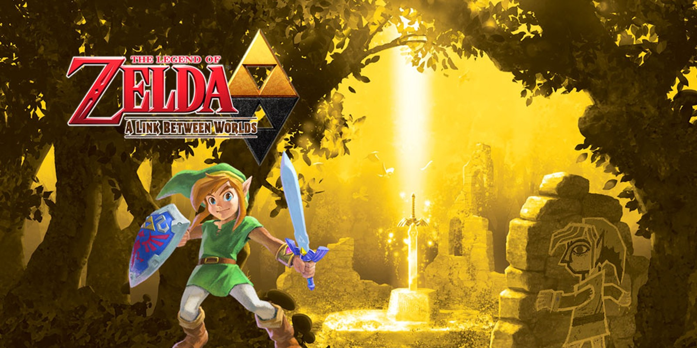

O que e Zelda?

The Legend of Zelda é uma das franquias de videogame mais famosas e influentes do mundo, criada pela Nintendo em 1986. Desenvolvida principalmente por Shigeru Miyamoto e Takashi Tezuka, a série mistura elementos de ação, aventura, exploração e resolução de enigmas em mundos de fantasia ricos em história e mitologia.
A trama principal gira em torno de três personagens icônicos: Link, o herói da série; Zelda, a princesa do reino de Hyrule; e Ganon (ou Ganondorf), o principal vilão. Em grande parte dos jogos, Link precisa embarcar em uma jornada para resgatar Zelda e derrotar Ganon, restaurando a paz no reino e protegendo a Triforce, um artefato sagrado que representa as virtudes da Coragem, Sabedoria e Poder.
Cada jogo da franquia traz uma nova versão desses personagens, com histórias independentes, mas conectadas por temas recorrentes, como o combate entre o bem e o mal, o uso de itens mágicos e a exploração de templos ou masmorras.
Ao longo dos anos, Zelda inovou o gênero de aventura com jogos como Ocarina of Time (1998), considerado um dos melhores jogos de todos os tempos, e Breath of the Wild (2017), que revolucionou os jogos de mundo aberto com liberdade de exploração e interação.
Com mais de três décadas de história, a franquia The Legend of Zelda continua a encantar gerações de jogadores, sendo sinônimo de qualidade, inovação e aventura épica no mundo dos videogames.
The legend of Zelda

O primeiro jogo da franquia The Legend of Zelda, lançado em 1986 para o Nintendo Entertainment System (NES), marcou o início de uma das sagas mais icônicas dos videogames. Ambientado no reino fictício de Hyrule, o jogo apresenta pela primeira vez o herói Link, a princesa Zelda e o vilão Ganon.
A história começa quando Ganon, o Rei das Trevas, invade Hyrule com seu exército e rouba a Triforce do Poder, um dos três fragmentos de um artefato mágico que concede grande força ao seu portador. Para impedir que Ganon se torne invencível, a Princesa Zelda divide a Triforce da Sabedoria em oito partes e as esconde em masmorras espalhadas por todo o reino. Antes de ser capturada, ela pede à sua fiel serva Impa que procure alguém corajoso o suficiente para salvá-la e derrotar Ganon.
É então que entra em cena Link, um jovem aventureiro que encontra Impa durante sua fuga. Ao ouvir sua história, Link decide embarcar em uma jornada heroica para encontrar os oito fragmentos da Triforce da Sabedoria, resgatar Zelda e restaurar a paz em Hyrule
Ao longo da aventura, o jogador deve explorar um mundo aberto cheio de perigos, derrotar inimigos, resolver enigmas e conquistar as masmorras que guardam os pedaços da Triforce. Depois de reunir todos os fragmentos, Link enfrenta Ganon em sua fortaleza, derrota o vilão e resgata a princesa Zelda.
O jogo termina com a restauração da paz em Hyrule e a promessa de que a lenda de Zelda continuaria — o que de fato aconteceu, com dezenas de jogos lançados nas décadas seguintes.
Zelda II : The Adventure of Link

Zelda II: The Adventure of Link é o segundo jogo da série The Legend of Zelda, lançado originalmente em 1987 no Japão para o Famicom Disk System e em 1988 no Ocidente para o Nintendo Entertainment System (NES). Diferente do primeiro jogo, Zelda II introduziu elementos de RPG, como níveis de experiência, magias e uma jogabilidade que alternava entre visão lateral (nas batalhas e calabouços) e visão aérea (no mapa do mundo). Ele é considerado um dos títulos mais distintos da franquia.
A história se passa algum tempo após os eventos do primeiro jogo. Após derrotar Ganon em The Legend of Zelda, Link retorna como herói, mas uma nova ameaça surge. Ao completar 16 anos, uma marca misteriosa aparece na mão de Link, sinal de que ele é o escolhido para quebrar um antigo feitiço lançado sobre a Princesa Zelda original do reino de Hyrule.
Nessa história, aprendemos que, muito tempo atrás, o príncipe de Hyrule tentou descobrir o paradeiro da Triforce completa, mas sua irmã, a Princesa Zelda, se recusou a contar. Com raiva, ele a amaldiçoou com um feitiço de sono eterno, do qual ela nunca mais acordou. Em honra à sua coragem, todos os descendentes reais passaram a se chamar "Zelda".
Para quebrar a maldição e despertar a princesa adormecida, Link precisa recuperar seis cristais mágicos e inseri-los em templos espalhados por Hyrule. Isso abrirá o caminho para o "Great Palace", onde repousa a Triforce da Coragem — o único item capaz de desfazer o feitiço. Enquanto isso, seguidores de Ganon tentam matar Link para usar seu sangue e ressuscitar seu mestre derrotado.
Ao final de sua jornada, Link enfrenta o poderoso guardião do palácio e, por fim, uma sombra de si mesmo — Dark Link, que representa seu maior desafio. Após vencer, ele conquista a Triforce da Coragem, completa o artefato sagrado e desperta a Princesa Zelda original.
The Legend of Zelda : A Link to the Past

The Legend of Zelda: A Link to the Past foi lançado originalmente em 1991 no Japão e em 1992 no Ocidente para o Super Nintendo (SNES). Este título marcou o retorno da série às raízes do primeiro jogo, com visão aérea e foco em exploração, mas trazendo uma história muito mais elaborada, além de inovações como dois mundos interligados: o Light World (Mundo da Luz) e o Dark World (Mundo das Trevas).
A história se passa muito tempo antes dos eventos do primeiro The Legend of Zelda, servindo como uma espécie de prelúdio na cronologia da série. O protagonista é Link, um jovem que vive com seu tio nas terras de Hyrule. Uma noite, Link acorda com uma mensagem telepática da Princesa Zelda, implorando por ajuda. Guiado por essa mensagem, ele parte para o castelo de Hyrule e encontra seu tio gravemente ferido, que lhe entrega uma espada e um escudo antes de morrer.
Link resgata Zelda das garras do malvado feiticeiro Agahnim, que havia assumido o controle do reino e estava usando seus poderes para banir as descendentes dos Sábios para o Dark World, na tentativa de libertar Ganon, o senhor das trevas. Depois de salvar Zelda temporariamente, Link descobre que precisa reunir os pendentes das virtudes (Coragem, Sabedoria e Força) para obter a lendária Master Sword, a única arma capaz de derrotar Agahnim.
Mesmo com a Master Sword em mãos, Agahnim consegue completar parte de seu plano e envia Link ao Mundo das Trevas — uma versão corrompida de Hyrule, moldada pelos desejos malignos de Ganon. Lá, Link descobre que, para salvar Zelda e restaurar a paz, ele precisa resgatar os sete descendentes dos Sábios e finalmente enfrentar Ganon, que planeja usar a Triforce para dominar os dois mundos.
Após muitas batalhas e desafios em ambos os mundos, Link derrota Ganon dentro da Pyramid of Power e reivindica a Triforce. Ao tocá-la, ele deseja restaurar a paz em Hyrule, desfazendo o caos causado por Ganon e Agahnim. O jogo termina com todos os personagens salvos, o reino em harmonia, e Link como um verdadeiro herói lendário.
The Legend of Zelda : Link's Awakening

The Legend of Zelda: Link’s Awakening é o quarto jogo da série The Legend of Zelda, lançado originalmente em 1993 para o Game Boy. Posteriormente, ele ganhou versões aprimoradas para o Game Boy Color (como Link’s Awakening DX) e um remake em 2019 para o Nintendo Switch. Apesar de ser um jogo portátil, ele apresenta uma narrativa profunda e única, sendo o primeiro título da série a se passar fora do reino de Hyrule e sem a presença da Princesa Zelda ou da Triforce como elementos centrais.
A história começa após os eventos de A Link to the Past. Durante uma jornada de treinamento em alto-mar, Link é surpreendido por uma tempestade e acaba naufragando em uma ilha misteriosa chamada Koholint. Ele é encontrado desacordado por uma jovem chamada Marin, que o leva para sua casa. Quando Link desperta, percebe que está preso na ilha e que algo está estranho com aquele lugar.
Logo, ele descobre que a única forma de deixar Koholint é despertando uma entidade mística chamada Wind Fish (Peixe do Vento), que dorme dentro de um ovo gigante no topo da montanha mais alta da ilha. Para isso, Link precisa reunir os oito Instrumentos das Sereias, escondidos em calabouços espalhados por toda a ilha.
Conforme avança, Link encontra diversos personagens peculiares, muitos deles vindos de outras franquias da Nintendo, como Chain Chomps e Goombas. Aos poucos, ele começa a entender que a ilha de Koholint pode não ser real: moradores falam de sonhos e há indícios de que tudo aquilo existe apenas enquanto o Wind Fish está dormindo.
Ao coletar todos os instrumentos, Link sobe até o ovo do Wind Fish e enfrenta criaturas sombrias conhecidas como Nightmares (Pesadelos), que tentam impedir seu despertar. A batalha final é contra o pesadelo final, que assume formas de vilões anteriores como Ganon, tentando convencer Link a não despertar o Wind Fish.
No final, Link toca os instrumentos e desperta o Wind Fish. Isso faz a ilha de Koholint desaparecer, revelando que tudo não passava de um sonho do Wind Fish. Link acorda flutuando no mar, sobre os destroços de seu barco, olhando para o céu — onde, por um breve momento, vê a silhueta do Wind Fish voando livremente.
The Legend of Zelda : Ocarina of Time
The Legend of Zelda: Ocarina of Time foi lançado em 1998 para o Nintendo 64 e é amplamente considerado um marco na história dos videogames. Foi o primeiro jogo da série Zelda em 3D e revolucionou os padrões de jogabilidade, narrativa e design em mundos abertos. Sua história é uma das mais épicas e profundas da franquia.
A aventura começa no reino de Hyrule, onde vive um jovem garoto chamado Link, criado pela guardiã da floresta Great Deku Tree entre os Kokiri — crianças que nunca crescem. Ao contrário dos outros, Link não possui uma fada. Certo dia, ele finalmente recebe a visita de Navi, enviada pela Deku Tree, que está sendo consumida por uma maldição sombria. Link a salva, mas ela morre logo depois, alertando sobre o surgimento de um grande mal.
Link parte então em uma missão para impedir os planos de Ganondorf, o ambicioso rei dos Gerudo, que deseja conquistar Hyrule usando o poder da lendária Triforce, um artefato sagrado dividido em três partes: Força, Coragem e Sabedoria. Para detê-lo, Link precisa abrir a Porta do Tempo, que guarda acesso ao Templo do Tempo e à Triforce. Para isso, ele coleta três pedras espirituais e toca a mística Ocarina do Tempo.
No entanto, tudo sai do controle. Ao abrir a porta, Link cai numa armadilha e Ganondorf invade o Reino Sagrado, tomando posse da Triforce da Força. Para impedir o caos, os sábios selam Link por sete anos até que ele esteja pronto para enfrentar o mal.
Quando desperta como adulto, Link descobre que Hyrule está mergulhada na escuridão. Com a ajuda de Sheik (uma figura misteriosa que mais tarde se revela como a Princesa Zelda disfarçada), Link viaja por templos sagrados para libertar os sete sábios, que possuem o poder de selar Ganondorf novamente.
No clímax da história, Link enfrenta Ganondorf em seu castelo. Após vencê-lo, o vilão se transforma na fera demoníaca Ganon para a batalha final. Link o derrota com a ajuda de Zelda e dos sábios, que o selam no Reino do Mal. Para restaurar o equilíbrio do tempo, Zelda envia Link de volta ao passado, dando-lhe a chance de viver a infância que perdeu.
The Legend of Zelda : Majora's Mask

The Legend of Zelda: Majora’s Mask foi lançado em 2000 para o Nintendo 64, como sequência direta de Ocarina of Time. Utilizando o mesmo motor gráfico, o jogo trouxe uma abordagem muito mais sombria, emocional e psicologicamente complexa. Ao contrário dos títulos anteriores, Majora’s Mask não se passa no reino de Hyrule, mas sim em um mundo paralelo chamado Termina, que está à beira da destruição.
A história começa pouco tempo após os eventos de Ocarina of Time. Link, agora em sua forma infantil, parte em busca de seu amigo perdido, a fada Navi. Durante sua jornada pela floresta, ele é atacado por um misterioso ser chamado Skull Kid, que rouba sua ocarina e seu cavalo. Skull Kid está usando a poderosa e maligna Majora’s Mask, um artefato antigo que lhe concede habilidades mágicas, mas que também o corrompe.
Link segue Skull Kid até Termina, uma terra estranhamente familiar, mas distorcida. Lá, ele descobre que a Lua, com um rosto assustador, está caindo do céu e colidirá com a cidade central, Clock Town, em apenas três dias. A queda destruirá todo o mundo, e os habitantes vivem presos em suas rotinas, ignorando ou negando o desastre iminente.
Preso em um ciclo de tempo de 72 horas (cerca de uma hora do mundo real), Link precisa usar a Ocarina do Tempo para voltar ao primeiro dia sempre que o tempo está prestes a acabar. Com isso, ele repete os mesmos três dias inúmeras vezes, tentando mudar o destino das pessoas e salvar Termina.
Ao longo da jornada, Link coleta máscaras mágicas, cada uma com habilidades únicas. As principais o transformam em diferentes raças: Deku, Goron e Zora, permitindo resolver puzzles e acessar novas áreas. Ele também ajuda diversos personagens com histórias emocionantes, muitas vezes trágicas, que se repetem a cada ciclo de tempo.
O objetivo final de Link é despertar os quatro gigantes guardiões das regiões de Termina — Floresta, Montanha, Oceano e Deserto — e usá-los para impedir que a Lua caia. Depois de muitas batalhas e encontros marcantes, Link enfrenta Majora, a entidade viva por trás da máscara, em uma batalha final dentro da própria Lua.
Após derrotar Majora e libertar Skull Kid da influência maligna, a Lua volta ao céu, e Termina é salva. Link parte silenciosamente em sua jornada, deixando para trás um mundo que ele salvou sem que a maioria dos habitantes sequer soubesse.
The Legend of Zelda : Oracle of
Ages/Oracle of Seasons
The Legend of Zelda: Oracle of Ages e Oracle of Seasons são dois jogos lançados simultaneamente em 2001 para o Game Boy Color. Desenvolvidos pela Capcom em parceria com a Nintendo, esses títulos formam uma dupla interligada: você pode jogá-los separadamente, mas ao terminar um, recebe um código que permite continuar a história no outro, revelando o verdadeiro final. Cada jogo foca em um tema diferente — tempo e estações — e apresenta uma aventura com estilo clássico, semelhante a Link’s Awakening.
A história começa com Link sendo enviado pela Triforce ao reino de Holodrum, onde ele conhece a dançarina Din, que logo se revela ser o Oráculo das Estações. Porém, a paz é abalada quando o maligno general Onox aparece, sequestra Din e afunda o Templo das Estações no subsolo, fazendo com que as estações de Holodrum fiquem completamente descontroladas.
Para salvar o reino, Link precisa recuperar o controle das estações usando o Cetro das Estações, que permite alterar o clima de acordo com a necessidade. Ao longo da jornada, ele enfrenta criaturas poderosas, resolve enigmas ligados às estações do ano e derrota Onox. Mas mesmo após a vitória, fica claro que há um mal maior por trás dos acontecimentos.
Já em Oracle of Ages, Link é transportado para o reino de Labrynna, onde conhece Nayru, a Oráculo das Eras. No entanto, Nayru é possuída pela feiticeira do tempo Veran, que passa a manipular a história do reino, viajando entre o passado e o presente para moldar o mundo ao seu favor.
Com a ajuda da Harp of Ages, Link pode viajar no tempo, alternando entre as duas eras para resolver enigmas, restaurar áreas corrompidas e corrigir eventos históricos. Ele precisa libertar Nayru, derrotar Veran e restaurar o equilíbrio temporal de Labrynna.
Ao jogar ambos os jogos em sequência conectada (usando senhas), Link descobre que Onox e Veran eram apenas peões de um plano muito mais sombrio: o Ressurgimento de Ganon. As verdadeiras vilãs por trás de tudo são as bruxas gêmeas Koume e Kotake, também conhecidas como Twinrova, que desejam usar os sacrifícios das Oráculos para ressuscitar Ganon e lançar o mundo nas trevas eternas.
No final secreto, Link invade o castelo das bruxas, impede o ritual, derrota uma forma incompleta de Ganon, e salva os dois reinos. A Triforce então o envia de volta para casa, com a missão cumprida.
The Legend of Zelda : Four Swords

The Legend of Zelda: Four Swords é uma aventura especial da série Zelda lançada originalmente como um modo extra junto com o remake de A Link to the Past para o Game Boy Advance, em 2002. Diferente dos títulos anteriores, Four Swords foi o primeiro jogo multiplayer da franquia, permitindo até quatro jogadores se unirem como diferentes versões de Link para resolver enigmas e derrotar inimigos juntos.
A história se passa antes dos eventos de The Minish Cap e gira em torno de uma nova ameaça ao reino de Hyrule: o maligno Vaati, um feiticeiro do vento que sequestra jovens donzelas, incluindo a Princesa Zelda. Para impedi-lo, Link recorre à lendária Four Sword, uma espada mágica que, ao ser empunhada, divide o herói em quatro versões coloridas de si mesmo — cada uma representada pelas cores verde, vermelho, azul e roxo.
Esses quatro Links devem trabalhar em equipe para superar desafios em masmorras cheias de enigmas, armadilhas e batalhas, que exigem cooperação e coordenação. Ao longo da jornada, eles enfrentam monstros poderosos, resgatam fadas aprisionadas e coletam chaves que abrem caminho para a fortaleza de Vaati.
No confronto final, os quatro Links derrotam Vaati e selam seu poder na espada, restaurando a paz em Hyrule e libertando Zelda. Após a vitória, os quatro Links se fundem novamente em um só, e a Four Sword é devolvida ao santuário onde permanece guardada... pelo menos até que o mal desperte novamente.
The Legend of Zelda : The Wind Waker

The Legend of Zelda: The Wind Waker foi lançado em 2002 no Japão e em 2003 no Ocidente para o Nintendo GameCube. Com um estilo visual inovador em cel-shading — que deu ao jogo uma aparência de desenho animado — The Wind Waker inicialmente dividiu opiniões, mas hoje é considerado um clássico, elogiado por sua narrativa profunda, mundo vibrante e atmosfera única.
A história se passa muitos séculos após os eventos de Ocarina of Time, em um mundo onde o lendário herói do tempo desapareceu e Hyrule foi submersa por um grande dilúvio, ficando escondida sob um vasto oceano. Novas ilhas surgiram, e a civilização prosperou sobre as águas, mas o mal antigo voltaria a ameaçar.
Você controla Link, um jovem que vive na pacata Ilha Taura. No dia de seu aniversário, sua irmã Aryll é sequestrada por um pássaro gigante a serviço do ressurgido Ganondorf, o antigo senhor das trevas. Determinado a resgatá-la, Link parte em uma jornada que o leva por mares abertos, novas ilhas e mistérios do passado.
Com a ajuda de uma embarcação falante chamada Rei dos Leões Vermelhos (King of Red Lions), Link navega por um vasto oceano, enfrenta monstros, explora templos antigos e descobre que sua missão vai muito além de salvar Aryll. Ele é o novo escolhido pelas deusas para enfrentar Ganondorf e impedir que ele recupere o poder da Triforce, escondida sob os mares, no reino submerso de Hyrule.
Durante sua jornada, Link conhece personagens importantes como Tetra, uma destemida pirata que mais tarde se revela como a reencarnação da Princesa Zelda. Juntos, eles buscam os fragmentos da Triforce da Coragem, restauram a fé dos espíritos guardiões e enfrentam os servos de Ganondorf em templos sagrados.
No final, Link e Zelda confrontam Ganondorf nas ruínas submersas do antigo castelo de Hyrule. Com a ajuda da espada sagrada Master Sword e da Triforce reunida, Link derrota Ganondorf em uma batalha épica. O rei de Hyrule, que havia guiado Link secretamente como o Rei dos Leões Vermelhos, deseja que o reino seja esquecido para que um novo mundo possa nascer — um mundo livre das sombras do passado.
Após a luta, Hyrule é finalmente afundada de vez, desaparecendo nas profundezas do mar. Link e Tetra sobrevivem e partem em busca de novas terras, prontos para fundar um novo reino e começar uma nova era.
The Legend of Zelda : The Minish Cap

The Legend of Zelda: The Minish Cap foi lançado em 2004 no Japão e em 2005 no Ocidente para o Game Boy Advance. Desenvolvido em parceria entre a Nintendo e a Capcom, o jogo conta a origem de elementos clássicos da série, como a espada mágica Four Sword e o vilão Vaati. Com um visual vibrante e jogabilidade refinada, The Minish Cap mistura fantasia, mistério e um toque de conto de fadas.
A história se passa no reino de Hyrule, em um tempo de paz. Todos os anos, é realizado um festival em homenagem aos Minish (ou Picori, no original japonês), pequenos seres lendários que, segundo a lenda, desceram do céu tempos atrás para ajudar os humanos, entregando a Espada Sagrada Picori e uma luz dourada que selou o mal.
Durante o festival, a Princesa Zelda é transformada em pedra por um misterioso feiticeiro chamado Vaati, que quebra a Espada Picori e liberta monstros por todo o reino. Vaati está em busca de um poder sagrado escondido no coração do castelo: a Força da Luz, que ele acredita estar selada ali.
Para salvar Zelda e restaurar a espada, o jovem Link parte em uma jornada e logo encontra Ezlo, um estranho chapéu falante que já foi um sábio Minish. Ezlo foi transformado em chapéu por Vaati — que, na verdade, era seu aprendiz corrompido pelo desejo de poder. Juntos, Link e Ezlo descobrem que a única forma de restaurar a Espada Picori é visitar os quatro santuários elementais e imbuí-la com os poderes da Terra, Fogo, Água e Vento.
Com a ajuda do poder dos Minish, Link ganha a habilidade de encolher de tamanho, permitindo explorar um mundo oculto sob os olhos dos humanos: jardins viram florestas, gotas d'água viram lagos, e insetos se tornam inimigos perigosos. Essa mecânica é essencial para resolver os quebra-cabeças do jogo e interagir com os Minish, que são invisíveis aos olhos humanos comuns.
Ao longo da jornada, Link derrota os servos de Vaati, restaura a Espada Sagrada — agora transformada na Four Sword — e invade o castelo de Hyrule, onde enfrenta Vaati em sua forma final. Após uma batalha épica, Link o derrota, salva Zelda e devolve a paz ao reino. Ezlo, livre de sua forma de chapéu, retorna ao mundo dos Minish, deixando com Link um presente simbólico de gratidão.
The Legend of Zelda : Twilight Princess

The Legend of Zelda: Twilight Princess foi lançado em 2006 para o Nintendo GameCube e como título de lançamento do Nintendo Wii. Com um estilo artístico realista e um tom mais maduro, o jogo é conhecido por sua atmosfera sombria, narrativa profunda e personagens intensos. Ele combina o estilo clássico da franquia com temas de luz e sombra, trazendo uma das aventuras mais emocionantes da série.
A história se passa em uma versão de Hyrule ameaçada pela invasão de um misterioso reino paralelo chamado Reino do Crepúsculo (Twilight Realm). Você controla Link, um jovem fazendeiro da vila de Ordon que vive uma vida pacata... até que tudo muda. Um grupo de criaturas chamadas Shadow Beasts invade sua vila, sequestra os moradores e o arrasta para uma versão sombria do mundo.
Dentro do Crepúsculo, Link é transformado em um lobo, perdendo sua forma humana. Nesse momento, ele conhece Midna, uma criatura sarcástica e misteriosa vinda do Reino do Crepúsculo. Ela faz um acordo com Link: ajudará a restaurar o mundo, mas com seus próprios interesses em mente. Juntos, eles escapam da prisão do castelo de Hyrule e encontram a Princesa Zelda, que explica que o reino está sendo tomado pela escuridão, sob o controle do usurpador Zant.
Zant tomou o trono do Reino do Crepúsculo e está tentando cobrir Hyrule em sombras. Link e Midna então embarcam em uma jornada para restaurar a luz às províncias corrompidas de Hyrule. Para isso, eles precisam reunir os Espíritos da Luz e obter relíquias sagradas, além de buscar os fragmentos do Espelho do Crepúsculo, a única passagem entre os dois mundos.
Ao longo da aventura, Midna deixa de ser apenas uma guia sarcástica e revela profundidade emocional, desenvolvendo uma verdadeira amizade com Link. Eventualmente, descobre-se que Zant recebeu seu poder de Ganondorf, o antigo rei do mal de Hyrule, que planeja usar o Crepúsculo para dominar o mundo.
Link, empunhando a Master Sword, enfrentando monstros colossais e superando desafios, finalmente derrota Zant, invade o castelo de Hyrule e enfrenta Ganondorf em um confronto final épico — passando por batalhas de cavalo, espadas e magia. No fim, Ganondorf é derrotado, e Midna, revelando sua verdadeira forma como a princesa legítima do Reino do Crepúsculo, retorna para seu mundo e destrói o espelho, selando a conexão entre os dois reinos para sempre.
The Legend of Zelda : Phantom Hourglass
The Legend of Zelda: Phantom Hourglass foi lançado em 2007 para o Nintendo DS e serve como sequência direta de The Legend of Zelda: The Wind Waker. Com um estilo gráfico semelhante ao seu antecessor, em cel-shading, o jogo traz uma jogabilidade adaptada à tela sensível ao toque do console portátil e mantém a atmosfera leve e aventureira, com um novo enredo que mistura mistério, exploração naval e ação.
A história começa pouco tempo depois dos eventos de The Wind Waker. Link está navegando pelos mares ao lado da pirata Tetra e sua tripulação em busca de novas terras. Durante a exploração de um navio fantasma misterioso, Tetra é capturada por uma força sombria, e Link tenta salvá-la — mas acaba caindo no oceano e sendo separado de seus amigos.
Link acorda em uma ilha desconhecida, onde conhece Ciela, uma fada que perdeu a memória, e Oshus, um velho sábio. Para salvar Tetra, Link precisa encontrar o Navio Fantasma e enfrentar a entidade maligna conhecida como Bellum, uma criatura que está drenando a força vital de tudo ao seu redor. Para isso, Link conta com a ajuda de Linebeck, um capitão covarde, ganancioso e divertido que fornece o navio para a jornada.
O centro da aventura é o misterioso Templo do Rei do Oceano, onde está o poder necessário para derrotar Bellum. Porém, o templo está corrompido por uma névoa venenosa que consome o tempo de vida de quem o explora. Para enfrentar esse desafio, Link precisa usar o Relógio Fantasma (Phantom Hourglass), um artefato mágico que concede tempo limitado de proteção dentro do templo. Ao longo do jogo, ele coleta areia do tempo para aumentar a duração do relógio e poder explorar áreas cada vez mais profundas do templo.
Durante sua jornada pelos mares, Link enfrenta diversos inimigos, resolve enigmas com o uso da caneta stylus (aproveitando a jogabilidade única do Nintendo DS), explora ilhas e calabouços, e ajuda Ciela a recuperar sua verdadeira identidade: ela é o Espírito da Coragem, parte de uma trindade que, junto aos Espíritos da Sabedoria e do Poder, é necessária para derrotar Bellum.
No clímax do jogo, Link enfrenta Bellum a bordo do Navio Fantasma e, depois, numa batalha final no topo do templo. Com a ajuda de Ciela, ele derrota a criatura e salva Tetra, restaurando a paz nos mares.
The Legend of Zelda : Spirit Tracks
The Legend of Zelda: Spirit Tracks foi lançado em 2009 para o Nintendo DS e é a sequência direta de Phantom Hourglass. Mantendo o estilo visual em cel-shading e a jogabilidade baseada na tela sensível ao toque, o jogo apresenta uma proposta inovadora: em vez de navegar pelos mares, Link agora viaja por vastas terras usando um trem, explorando o mundo por meio de trilhos mágicos.
A história se passa em uma nova terra, fundada pelos descendentes de Tetra e seu povo, após os eventos de Phantom Hourglass. Nesse novo reino de Hyrule, as chamadas Spirit Tracks (Trilhos Espirituais) foram construídas para selar um antigo demônio chamado Malladus, que uma vez ameaçou destruir o mundo. Esses trilhos, criados pelos deuses e mantidos pelos Lokomos (seres sábios e guardiões), formam uma rede sagrada que impede Malladus de escapar de sua prisão.
Você controla Link, um jovem aprendiz de engenheiro que sonha em conduzir trens pelo reino. No início da aventura, ele vai até o castelo de Hyrule para receber sua certificação das mãos da Princesa Zelda. No entanto, Zelda desconfia de Chanceler Cole, seu conselheiro, e pede ajuda a Link para investigar seus planos.
Durante a investigação, Cole revela sua verdadeira identidade como um servo de Malladus. Ele remove o espírito de Zelda de seu corpo e começa o processo para reviver o demônio, usando o corpo da própria princesa como receptáculo. Link, agora com a ajuda do espírito de Zelda (que passa a acompanhá-lo na forma de fantasma), parte em uma jornada para restaurar os trilhos espirituais e impedir a ressurreição de Malladus.
Ao longo da aventura, Link e o espírito de Zelda viajam de trem por diversas regiões, cada uma com seu Templo Espiritual guardado por um Lokomo. Zelda também ganha um papel inédito na série: ela pode possuir armaduras espectrais dentro da Torre dos Espíritos, ajudando Link a superar obstáculos, lutar contra inimigos e resolver quebra-cabeças em equipe.
Com a ajuda dos Lokomos, dos instrumentos sagrados e do poder da cooperação entre Link e Zelda, os heróis restauram os trilhos perdidos, enfrentam Cole e seu aliado Byrne, e finalmente confrontam Malladus, que tenta usar o corpo de Zelda como receptáculo definitivo.
Na batalha final, Link e Zelda unem forças como nunca antes, com a princesa recuperando seu corpo e canalizando seu poder sagrado para ajudar Link a destruir Malladus de uma vez por todas, salvando o novo reino de Hyrule.
The Legend of Zelda : Skyward Sword
The Legend of Zelda: Skyward Sword foi lançado em 2011 para o Nintendo Wii, sendo um dos jogos mais importantes da franquia por apresentar a origem cronológica da série. Ele explica como surgiram a Master Sword, a Triforce, o ciclo eterno de reencarnações de Link, Zelda e Ganon, e os fundamentos do conflito entre bem e mal que permeiam todos os jogos da saga.
A história se passa nas alturas, no mundo flutuante de Skyloft (Altárea, em português), onde os humanos vivem isolados acima das nuvens, longe das terras da superfície, que foram seladas há eras por um poder maligno. O jovem Link, um estudante da Academia de Cavaleiros, vive uma vida tranquila até que sua amiga de infância, Zelda, é levada por um redemoinho mágico durante um voo, desaparecendo em direção ao mundo abaixo das nuvens.
Guiado por uma entidade espiritual chamada Fi, que habita uma espada sagrada no Templo da Deusa, Link descobre que seu destino é muito maior do que imaginava. Ele desce à superfície, agora dividida em três grandes regiões (Floresta de Faron, Vulcão de Eldin e Deserto de Lanayru), em busca de Zelda e de respostas sobre os antigos mistérios do mundo.
Ao longo da jornada, Link enfrenta o vilão Ghirahim, um ser sádico e poderoso que busca reviver seu mestre, o Rei Demônio Demise, uma entidade primordial que deseja dominar todos os mundos. Zelda, por sua vez, descobre que é a reencarnação da deusa Hylia, que selou Demise no passado e renasceu como humana para purificar a Triforce e destruir o mal de forma definitiva.
Para cumprir seu destino, Link precisa fortalecer sua espada com as três chamas sagradas e transformá-la na lendária Master Sword, a única capaz de selar o mal para sempre. Ele também precisa reunir as três partes da Triforce — Força, Coragem e Sabedoria — para alcançar a vitória sobre Demise.
No clímax da história, após muitas batalhas e desafios, Link confronta e derrota Ghirahim, que sacrifica a si mesmo para reviver Demise. Em uma última luta épica, Link vence o Rei Demônio, mas antes de ser selado, Demise lança uma maldição: suas trevas renascerão eternamente, assim como os espíritos de Link e Zelda, condenados a enfrentar esse ciclo de conflito por toda a eternidade.
Após a vitória, Zelda decide permanecer na superfície para fundar o reino de Hyrule, e Link permanece ao seu lado. Fi, cumprindo sua missão, entra em um sono eterno dentro da Master Sword, encerrando o início da lenda.
The Legend of Zelda : A Link Between Worlds
The Legend of Zelda: A Link Between Worlds foi lançado em 2013 para o Nintendo 3DS e é uma espécie de sequência espiritual de A Link to the Past, clássico do Super Nintendo. Apesar de compartilhar o mesmo mapa básico do reino de Hyrule, o jogo apresenta uma história original e uma nova mecânica revolucionária: Link pode se transformar em um desenho na parede, fundindo-se aos muros para resolver enigmas e acessar locais inacessíveis.
A trama se passa muitos anos após os eventos de A Link to the Past. O jovem Link vive como aprendiz de ferreiro em Hyrule. Certo dia, ele é chamado ao castelo para entregar uma espada, mas acaba envolvido em uma crise quando um misterioso feiticeiro chamado Yuga aparece e transforma a Sacerdotisa Seres — e depois a Princesa Zelda — em pinturas mágicas, aprisionando suas essências.
Yuga não para por aí: ele busca os sete sábios para completar um ritual sombrio que pretende libertar o poderoso Ganon e fundir-se com ele, criando uma nova ameaça ao mundo. Para isso, ele atravessa para um reino sombrio e paralelo chamado Lorule, um reflexo distorcido de Hyrule.
Com a ajuda de um misterioso comerciante chamado Ravio, que se instala na casa de Link e empresta armas e itens ao herói, Link parte em uma jornada para resgatar os sábios, salvar Zelda e impedir que Yuga conquiste os dois mundos. Usando um braçadeira mágica dada por Ravio, Link adquire a habilidade de se fundir às paredes como uma pintura, o que se torna fundamental para explorar dungeons, atravessar obstáculos e passar entre Hyrule e Lorule.
Em Lorule, Link descobre que o reino está em ruínas porque sua Triforce foi destruída por seus governantes na tentativa de eliminar os conflitos causados por ela. No entanto, isso acabou mergulhando Lorule no caos. A princesa desse reino, Hilda, parece inicialmente ajudar Link a salvar Zelda e deter Yuga, mas depois se revela manipuladora, querendo roubar a Triforce de Hyrule para restaurar Lorule.
Na batalha final, Link enfrenta Yuga-Ganon, com Zelda ao seu lado. Após a vitória, Hilda percebe seu erro e lamenta o destino de seu mundo. É então que Ravio revela ser o "Link" de Lorule, alguém que teve medo de lutar em sua própria terra, mas que agora se redime ao ajudar o verdadeiro herói.
Com o mal derrotado, Link e Zelda usam a Triforce de Hyrule para restaurar a Triforce de Lorule, dando uma nova esperança ao reino sombrio. Ao final da jornada, paz é restaurada nos dois mundos, e Link retorna ao seu lar com mais sabedoria e coragem.
The Legend of Zelda : Hyrule Warriors
The Legend of Zelda: Hyrule Warriors é um jogo lançado originalmente em 2014 para o Wii U, e mais tarde em versões aprimoradas para o 3DS e Nintendo Switch. Diferente dos jogos tradicionais da franquia, Hyrule Warriors mistura o universo de Zelda com a jogabilidade de batalhas em massa da série Dynasty Warriors, da Koei Tecmo. O resultado é uma experiência épica e cheia de ação, mas com uma história original e envolvente, situada em um universo alternativo de Hyrule.
A trama gira em torno de uma poderosa feiticeira chamada Cia, guardiã do equilíbrio da Triforce. Ela era originalmente uma mulher sábia e justa, mas se corrompe ao desenvolver uma obsessão por Link, o lendário herói. Consumida por esse desejo, Cia se une a forças malignas e decide libertar o Rei Demônio Ganondorf, que estava selado em fragmentos espalhados por diferentes eras de Hyrule.
Para reunir esses fragmentos e restaurar Ganondorf, Cia abre portais do tempo e do espaço, conectando diferentes linhas temporais e mundos da série Zelda. Isso faz com que personagens e vilões de vários jogos da franquia — como Ocarina of Time, Twilight Princess e Skyward Sword — se encontrem em uma só realidade, gerando uma guerra sem precedentes em Hyrule.
Link, ao lado da Princesa Zelda e de uma nova guerreira chamada Lana (que é a contraparte “luz” de Cia), lidera as forças da luz contra os exércitos do mal em campos de batalha gigantescos. Ao longo da campanha, outros heróis clássicos se unem à luta, como Impa, Darunia, Midna, Fi e até Toon Link, dependendo da versão do jogo.
Enquanto enfrentam hordas de inimigos, os heróis precisam derrotar os generais de Cia, fechar os portais temporais e impedir a ressurreição completa de Ganondorf. No clímax da história, Ganondorf consegue recuperar sua forma e tenta conquistar Hyrule usando o poder da Triforce, mas é finalmente derrotado pela aliança dos heróis vindos de diferentes eras.
No final, Cia se arrepende de seus atos, e a paz retorna a Hyrule, com cada personagem voltando à sua respectiva linha temporal.
The Legend of Zelda : Tri Force Heroes

The Legend of Zelda: Tri Force Heroes foi lançado em 2015 para o Nintendo 3DS e se destaca por sua proposta cooperativa. Diferente dos jogos tradicionais da série, aqui três Links trabalham juntos simultaneamente para enfrentar desafios e resolver enigmas. A história se passa em um novo reino, com uma trama leve, cômica e repleta de estilo.
A aventura ocorre no reino de Hytopia, uma terra obcecada por moda e estilo. A princesa Styla, famosa por sua beleza e bom gosto, é amaldiçoada por uma misteriosa bruxa chamada Lady Maud, que a obriga a vestir um macacão feio e indesejado — considerado uma tragédia no reino. A maldição é tão poderosa que a princesa não consegue tirar a roupa de forma alguma, mergulhando Hytopia em desespero.
Para salvar a princesa e restaurar a alegria do povo, o rei de Hytopia convoca os lendários Heróis Totem, guerreiros que, segundo a profecia, usarão o poder da Triforce para derrotar o mal. Três jovens que se parecem com Link atendem ao chamado. Eles são conhecidos como os heróis de cabelo vermelho, azul e verde — e juntos devem trabalhar em equipe para enfrentar os desafios do Reino das Drablands, um mundo paralelo repleto de monstros, armadilhas e dungeons.
A jogabilidade gira em torno da cooperação entre os três Links. Eles podem formar um “totem humano”, empilhando-se uns sobre os outros para alcançar plataformas elevadas, atacar inimigos em diferentes alturas e resolver puzzles criativos. Cada herói pode vestir roupas com habilidades únicas, como a roupa de bomba, de arqueiro ou de magia, o que adiciona estratégia à escolha de figurinos antes de cada fase.
Ao longo da jornada pelos Drablands, os heróis enfrentam diversos ambientes temáticos — como florestas, vulcões, fortalezas e áreas aquáticas — em busca dos materiais necessários para confeccionar novas roupas e, principalmente, chegar até Lady Maud.
No final, os três Links enfrentam a bruxa em uma batalha estilosa e dramática. Com esforço conjunto, eles quebram a maldição sobre a princesa Styla, devolvendo a liberdade e a beleza à realeza de Hytopia. A paz e o glamour voltam a reinar no reino, e os heróis são celebrados por seu espírito de cooperação e coragem.
The Legend of Zelda : Breath of the Wild

The Legend of Zelda: Breath of the Wild foi lançado em 2017 para o Nintendo Switch e Wii U, e marcou uma grande revolução na série, com um mundo aberto vasto, liberdade total de exploração e uma narrativa profunda que reconstrói o mito da Triforce e do herói lendário.
A história se passa em um reino de Hyrule devastado. Cem anos antes dos eventos do jogo, o mal conhecido como Calamidade Ganon (ou Ganon, o Cataclismo) despertou das profundezas do Castelo de Hyrule e destruiu quase tudo. O reino havia se preparado com tecnologia ancestral chamada Guardians e Divine Beasts (Bestas Divinas) — enormes máquinas de guerra — para impedir o retorno de Ganon. Comandando essas máquinas estavam os quatro Campeões das principais raças do reino, além da princesa Zelda, herdeira do poder sagrado da Deusa Hylia, e Link, o cavaleiro escolhido pela Espada Mestra para protegê-la.
No entanto, Ganon foi mais poderoso do que o esperado. Ele corrompeu as Bestas Divinas e os Guardiões, virou as máquinas contra seus mestres e devastou Hyrule. Os quatro Campeões foram mortos, Link ficou gravemente ferido e Zelda, com seu poder sagrado finalmente despertado, conteve Ganon no Castelo, sacrificando sua liberdade para mantê-lo selado temporariamente. Link foi colocado em sono profundo no Santuário da Ressurreição, onde permaneceu por cem anos.
O jogo começa com Link acordando sem memória, em um mundo em ruínas. Guiado por vozes misteriosas, ele descobre pouco a pouco seu passado e a missão que precisa cumprir: recuperar a memória, libertar as Bestas Divinas, derrotar Ganon e libertar Zelda.
Ao longo da jornada, Link explora as quatro regiões principais de Hyrule: o Deserto Gerudo, a Região dos Zora, a Montanha dos Goron e a Aldeia Rito. Em cada uma, ele ajuda o povo local, enfrenta os chefes que tomaram as Bestas Divinas e recupera o controle das máquinas para usá-las contra Ganon. Ele também reconquista a Espada Mestra, escondida na Floresta Korok, e revive suas memórias com Zelda, revelando a relação de confiança, dor e sacrifício entre eles.
No clímax da história, Link invade o Castelo de Hyrule e enfrenta Ganon com a ajuda das Bestas Divinas, que enfraquecem o inimigo. Após uma batalha épica, Zelda usa todo seu poder sagrado para finalmente selar Ganon de uma vez por todas. Hyrule está, enfim, livre da ameaça milenar.
No final, Zelda e Link observam as ruínas do reino e decidem reconstruí-lo. O jogo termina com esperança, sugerindo que a paz pode retornar — mas também com o sentimento de que a lenda continuará, como sempre.
The Legend of Zelda : Hyrule Warriors
Age of Calamity
The Legend of Zelda: Hyrule Warriors – Age of Calamity é um jogo que mistura ação em tempo real com narrativa épica, funcionando como um prólogo alternativo aos eventos de The Legend of Zelda: Breath of the Wild. A história se passa cem anos antes da grande calamidade que devastaria o reino de Hyrule, apresentando os personagens em uma era de tensão crescente, onde os sinais do retorno de Ganon começam a se manifestar.
O rei Rhoam, preocupado com a profecia da Calamidade, organiza os preparativos para a guerra. Ele convoca os maiores guerreiros de cada povo: Mipha dos Zora, Daruk dos Gorons, Revali dos Rito e Urbosa das Gerudo. Esses quatro Campeões são escolhidos para pilotar as poderosas Bestas Divinas, armas ancestrais construídas para enfrentar Ganon. Link, um jovem e habilidoso cavaleiro, se destaca entre os soldados e é escolhido como o guarda-costas da princesa Zelda, que carrega dentro de si um poder sagrado essencial para selar o mal. No entanto, Zelda sofre com a pressão e a dúvida, pois seu poder ainda não despertou.
Enquanto os preparativos para a guerra avançam, um pequeno Guardião vindo do futuro aparece misteriosamente. Ele viajou no tempo para tentar mudar o trágico destino que havia testemunhado: a queda de Hyrule e a vitória de Ganon. A presença desse Guardião altera os eventos conhecidos, criando uma linha do tempo alternativa. Graças a essa intervenção, aliados inesperados, como Sidon, Yunobo, Riju e Teba, que originalmente só existiriam no futuro, aparecem no passado para ajudar na luta contra a Calamidade.
Enquanto isso, o feiticeiro sombrio Astor, junto ao clã Yiga, trabalha secretamente para ressuscitar Ganon, espalhando caos e comandando exércitos de monstros por toda Hyrule. As batalhas se tornam cada vez mais intensas, e os heróis são constantemente postos à prova. Em um momento de desespero, quando Link está em perigo, Zelda finalmente desperta seu poder sagrado, assumindo seu papel como figura central na resistência.
Com todos os aliados unidos — os Campeões, os novos heróis do futuro, e Zelda com seus poderes despertos —, o exército de Hyrule parte para a batalha final. Ganon, enfraquecido por não ter completado sua ascensão, assume uma forma monstruosa e é enfrentado por todos. No confronto decisivo, o pequeno Guardião Terrako se sacrifica para proteger Zelda, mas seu ato de bravura ajuda a garantir a vitória dos heróis.
Ao final da história, o destino de Hyrule é mudado. Em vez da destruição que ocorreu em Breath of the Wild, o reino sobrevive graças à união, à coragem e ao poder da esperança. Age of Calamity apresenta uma nova visão da lenda, onde o passado é reescrito e a tragédia é evitada — ao menos nessa linha do tempo.
The Legend of Zelda : Tears of the Kingdom

The Legend of Zelda: Tears of the Kingdom, lançado em 2023 para o Nintendo Switch, é a sequência direta de Breath of the Wild. Com um mundo ainda mais amplo — agora incluindo ilhas flutuantes e profundezas subterrâneas — o jogo aprofunda a mitologia da franquia e traz revelações antigas sobre o passado de Hyrule, a origem do mal e o verdadeiro papel de Zelda e Link na eterna luta contra as forças sombrias.
A história começa com Link e Zelda explorando ruínas misteriosas abaixo do Castelo de Hyrule. Durante essa expedição, eles descobrem uma múmia aprisionada que, ao despertar, liberta um poder maligno devastador: Ganondorf, o antigo Rei Demônio. Sua ressurreição provoca um cataclismo conhecido como o "Colapso" (ou Upheaval), que ergue partes de Hyrule aos céus, abre fendas nas profundezas da terra e espalha o caos pelo reino. Zelda desaparece em meio à confusão, e Link perde o braço direito, corrompido por um poder sombrio.
Link é salvo por um espírito ancestral chamado Rauru, um dos fundadores do antigo Reino de Hyrule, que substitui o braço ferido de Link por um braço mágico com habilidades especiais. Assim começa a nova jornada: encontrar Zelda, agora desaparecida no tempo, e impedir que Ganondorf recupere todo seu poder, o que traria a destruição total de Hyrule.
Ao longo da aventura, Link explora não só a superfície de Hyrule, mas também as Ilhas Celestiais e o vasto mundo subterrâneo conhecido como Profundezas. Ele adquire novos poderes com o braço de Rauru, como a habilidade de fundir objetos, voltar no tempo e atravessar estruturas. Também reencontra aliados das diferentes tribos — Zora, Gerudo, Goron e Rito — e os ajuda a combater novos monstros e desequilíbrios causados pelo Colapso.
Durante a jornada, é revelado que Zelda foi enviada ao passado, na era do primeiro Rei de Hyrule, onde testemunha a origem da guerra contra o Rei Demônio Ganondorf. Lá, ela descobre que o sacrifício necessário para ajudar Link envolve transformar-se em um dragão eterno, um ato irreversível. Movida por sua coragem, Zelda se sacrifica, tornando-se o Dragão Branco, uma criatura majestosa que acompanha Link anonimamente durante toda a sua missão.
No final do jogo, Link confronta Ganondorf em uma batalha épica nas profundezas do Castelo de Hyrule. Após derrotá-lo, o Dragão Branco — Zelda — intervém. Usando os poderes adquiridos durante a jornada e a ajuda dos sábios modernos e antigos, Link consegue restaurar a forma humana de Zelda, quebrando o ciclo de tragédia que sempre marcou a lenda.
The Legend of Zelda : Echos of Wisdon

The Legend of Zelda: Echoes of Wisdom é um jogo inédito da série, com lançamento previsto para 26 de setembro de 2024, exclusivamente para o Nintendo Switch. Este título marca uma mudança histórica na franquia: pela primeira vez, a Princesa Zelda é a protagonista jogável de uma aventura principal.
A história de Echoes of Wisdom se passa em Hyrule, após os eventos de um jogo anterior (aparentemente relacionado ao estilo de Link’s Awakening ou A Link to the Past). Tudo começa quando uma fenda misteriosa se abre no céu e começa a engolir pessoas, incluindo Link, o herói da Triforce da Coragem. Com Link desaparecido, cabe a Zelda salvar o reino e descobrir a origem dessas distorções.
Durante a crise, Zelda encontra uma criatura mágica chamada Tri, que lhe concede um novo tipo de poder: a Vara da Criação (Tri Rod). Com ela, Zelda não luta da forma tradicional, mas pode criar cópias — chamadas de ecos — de objetos e inimigos que encontra pelo caminho. Esses ecos podem ser usados para resolver quebra-cabeças, explorar o mundo ou até se defender.
A grande ameaça por trás dos desaparecimentos e do desequilíbrio em Hyrule ainda é envolta em mistério. No entanto, o foco da narrativa está no crescimento de Zelda como heroína, forjada pela necessidade de agir por conta própria, sem depender de Link. Ela parte em uma jornada para salvar Hyrule, resgatar os que desapareceram e enfrentar forças misteriosas que desafiam o equilíbrio do mundo.
A jogabilidade e o estilo visual seguem o estilo gráfico do remake de Link’s Awakening (2019), com visuais coloridos, vista aérea e puzzles clássicos de Zelda. No entanto, o diferencial é a criatividade estratégica com os ecos — por exemplo, Zelda pode criar blocos de água para alcançar áreas altas, ou invocar uma pedra para bloquear ataques inimigos.
Timeline
1. A Era da Criação e da Lenda
Tudo começa com a criação do mundo por três deusas: Din, Nayru e Farore, que criaram o mundo e deixaram a Triforce, um artefato sagrado. O mal aparece com Demise, o antepassado de Ganon, dando origem ao ciclo eterno de heróis e vilões.
Jogos:
- The Legend of Zelda : Skyward Sword
Mostra os eventos mais antigos da cronologia. Explica a origem da Master Sword e o início da maldição de Demise, que se perpetua nas futuras reencarnações de Link e Zelda. - The Legend of Zelda : The Minish Cap
Conta a origem do chapéu falante Ezlo, do vilão Vaati e da Espada Picori. - The Legend of Zelda : Four Swords
A primeira aparição de Vaati como vilão, Link se divide em quatro.
2. Era do Tempo: O Ponto de Ramificação
O jogo Ocarina of Time é o divisor da cronologia. Após seus eventos, surgem três linhas temporais distintas:
Linha do Tempo 1 – A Derrota do Herói (Link perde para Ganon em Ocarina of Time)
Nessa linha, o herói fracassa, Ganon conquista a Triforce e o mundo mergulha nas trevas. Esta linha leva aos jogos mais "clássicos" da franquia.
Jogos:
- The Legend of Zelda : A Link to the Past
Ganon é selado no Reino Sagrado; Link precisa impedi-lo de escapar. - The Legend of Zelda : Link's Awakening
Link naufraga em uma ilha misteriosa após os eventos de Oracle. - The Legend of Zelda : Oracle of Ages/Oracle of Seasons
Link viaja por diferentes terras para impedir a ressurreição de Ganon. - The Legend of Zelda : A Link Between Worlds
Uma sequência espiritual de A Link to the Past, com universos paralelos. - The Legend of Zelda : Tri Force Heroes
Um jogo mais leve, com foco em multiplayer. - The Legend of Zelda: Majora's Mask
Link parte para uma terra desconhecida (Termina) e enfrenta a Lua e Skull Kid. - The Legend of Zelda: Twilight Princess
Ganondorf tenta retornar ao poder e é enfrentado por um novo Link. - The Legend of Zelda: Four Swords Adventures
Ganon se ergue novamente com a ajuda de Vaati; Link se divide em quatro para enfrentá-lo. - The Legend of Zelda : The Wind Waker
Em um mundo coberto por oceanos, Link parte para resgatar sua irmã e enfrenta Ganon. - The Legend of Zelda : Phantom Hourglass
Continuação direta de Wind Waker, em busca de um novo mundo. - The Legend of Zelda : Spirit Tracks
Séculos depois, em um novo reino, o espírito de Ganon ainda ameaça o mundo. - The Legend of Zelda : Breath of the Wild
Um Hyrule devastado pela Calamidade Ganon é reconstruído por Link e Zelda. - The Legend of Zelda : Tears of the Kingdom
Continuação direta, explora as profundezas e os céus de Hyrule.
Linha do Tempo 2 – A Infância: Link volta no tempo e avisa Zelda (Ganondorf é preso)
Após derrotar Ganon, Link retorna à infância e evita que Ganondorf obtenha a Triforce. Essa linha leva a jogos mais sombrios e focados em consequências.
Jogos:
Linha do Tempo 3 – A Adultez: Link derrota Ganon e desaparece (Zelda continua no futuro)
Após a vitória sobre Ganon, Link é mandado de volta à infância, deixando Hyrule sem herói. Eventualmente, a terra é inundada pelos deuses para conter Ganon.
Jogos:
Linha Cronológica Futura: A Era da Calamidade e o Novo Mundo
The Legend of Zelda: Breath of the Wild acontece em um futuro distante, onde as histórias das três linhas temporais se reencontram.